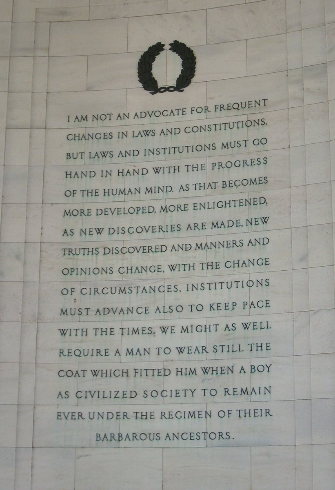

96. Barbarous Ancestors 🔗
July 2, 2022
In which I call the Founding Fathers exceptionally mediocre thinkers — citing Jefferson's own self-description as a barbarous ancestor — and argue that constitutional originalism is fragile nerd fandom propping up a short document with astounding exegetical overhead, like Windows on DOS.
🔗
Increasingly thinking the founding fathers were exceptionally mediocre people who did some exceptionally mediocre thinking and even recognized it. Mixed in with some outright bad thinking,
🔗
And between being very hard to amend, and the courts serving as a sort of retcon-cope nerd fandom, the fragility just builds and builds. It’s a very short constitution (among the better features) with astounding amounts of legal exegesis on top. Kinda like windows on dos.
🔗
Unfortunately generations of fragile nerds, who approach it the way comicbook fans approach the Batman canon, have elevated that mediocre work to a kind of divine status where it is subject to stresses of overextended use it can’t handle.
🔗
I genuinely don’t get the religious fervor the cult of originalism brings to the party. It’s a hard practical problem of structural/procedural reform exacerbated by a group that sincerely treats a core document like it’s divine revelation with unquestionable authority.
🔗
I mean Jefferson basically copped to this view. He literally tagged his gang for future generations as “barbarous ancestors”

🔗
Saturday morning rant triggered by the speculation in the thread I’m quoting here.
So basically the constitution has a meltdown/spectre type basic bug due to bad original design that is now being claimed as a feature https://t.co/mVREiLBUti
🔗
No, 235 years of field use doesn’t make the case you might think it does. It’s a version of appeal to nature fallacy. Mere survival of a thing makes no case one way or the other about its moral value. Especially when propped up by violence.
@Lindy_War The “proof by real world demonstration” doesn’t show what origins lists claim. Slavery was ignored and took a century to blow up in a bloody civil war and still isn’t sorted out. The demonstration is that bad thinking can be propped up by violence for centuries
🔗
My theory is that the American System, which arose despite the constitution rather than because of it (since it had a strong federal bias) paved the cowpaths of historic colonial luck with European technology imports and actually created American power American System (economic plan) - Wikipedia
🔗
To the extent the job of politics and law is to articulate and codify a causal and moral rationale for good fortune (aka claim parentage of success), you could say the deadbeat parent got custody of the prodigal child and the nurturing parent got ignored and cut out of the story
🔗
Amendability is a tough design variable. The Indian constitution is 105 amendments in 75y but then the doc itself is way bigger and there are 3 types. Various US state constitutions are all over the place. Alabama is 977, California is 516. Number of state constitutional amendments in each state - Ballotpedia
🔗
Declaring the American experiment an unqualified success (ignoring negative externalities both domestically and globally) and attributing all that presumed success to the genius recipe of the constitution (ignoring historic luck and depredations) = bozo patriotism. Flip bozobit.
🔗
Bozo patriotism is eating the world
This problem is not unique to the US but is most pronounced here due to the odd combination of simultaneously being the oldest modern state and youngest nation
This problem is not unique to the US but is most pronounced here due to the odd combination of simultaneously being the oldest modern state and youngest nation
🔗
Vaguely related… I’ve been part of a weekly governance studies group at the @yak_collective for 2 years now. This stuff is hard in ways ordinary PoliSci people just don’t appreciate because they dismiss technological change as rounding errors (eg DAOs) to historical experience
🔗
Eg yesterdays session discussed, among other themes, whether blockchains could do better with historical travesties like this ugly handling of a native rights case in SoCal. Our conclusion: we have no good ideas. Today's Law As Amended - AB-2272 Native American lands: Tongva Reservation.
🔗
We read and discuss a mix of recent history and tech stuff and old history/case studies. Approaching new technological potential in a historically informed way is just plain hard.
🔗
Unfortunately hard to do when the iron grip of history has rusted in place and there is no way to open things up and entertain hard questions. Creating and holding space itself seems to demand the violence of revolution. Which is often a cure worse than the disease.
🔗
I suspect the right move when you can’t think of good answers to hard questions is to loosen your grip on the situation and merely hold the questions and let a bit of anarchy reign for a bit for new creative possibilities to emerge. Not rush to precipitate new commitments.
🔗
Feels like America runs on a kind of fossilized serendipity that basically ran out around 1974. The tech boom (built on 60s/70s serendipity) masked it for 50y but is no longer strong enough to mask. Need new lightning bolts of luck.
Notes
- @David_o_Bedlam — https://twitter.com/David_o_Bedlam/status/1543286847203336193
- @Oneoneder — https://twitter.com/Oneoneder/status/1543293814391148549
- @jeremiahrogers — https://twitter.com/jeremiahrogers/status/1543298882439823360